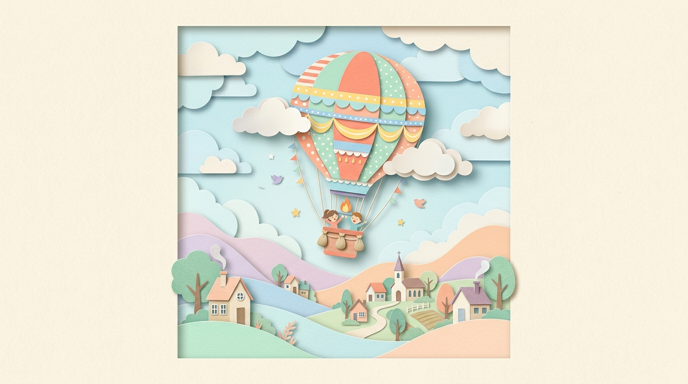

레이어드 페이퍼 아트
UI 컴포넌트 라이브러리
디지털 인터페이스에 손으로 한 땀 한 땀 오려 붙인 종이공예의 따뜻함과 물리적 깊이를 부여합니다.
44종 마스터 컴포넌트, 6대 실전 앱 블록, 750종 풀컬러 3D 아이콘으로 엔터프라이즈급 종이공예 UI를 경험해보세요.

"Layered paper-cut illustration of [ ], with overlapping shapes in soft pastel colors, handcrafted textures, subtle shadows between layers, clean vector edges, centered on a matte cream background, whimsical and modern visual storytelling."
초간단 설치 & 복사 붙여넣기 가이드 (Quick Install & Copy-Paste)
단 한 줄의 설치와 클릭 한 번의 복사 붙여넣기로, 당신의 웹 프로젝트에 3D 수제 페이퍼 아트의 감성과 물리적 입체감을 즉시 가져다 쓸 수 있습니다.
1. 1초 완성 HTML 템플릿
추천외부 빌드 도구 없이 글로벌 CDN 링크 하나로 즉시 실행할 수 있는 완성형 스타터 코드입니다.
<link rel="stylesheet" href="https://cdn.jsdelivr.net/npm/paper-cutting-ui@1.0.0/papercut.css">
<script src="https://cdn.jsdelivr.net/npm/paper-cutting-ui@1.0.0/papercut.js"></script>
<script src="https://cdn.jsdelivr.net/npm/paper-cutting-ui@1.0.0/papercut-icons.js"></script>
2. NPM 패키지 설치
React/Vue/Vite프로젝트 터미널에서 패키지를 설치하고 스타일시트를 바로 임포트합니다.
npm install paper-cutting-ui
import 'paper-cutting-ui/css';
3. npx CLI (컴포넌트 추가)
shadcn 스타일원하는 컴포넌트만 골라서 프로젝트 폴더에 파일 형태로 바로 내려받습니다.
npx paper-cutting-ui init
npx paper-cutting-ui add button
설치 가이드: CSS 경로만 있으면 되나요?
사용 목적에 따라 다릅니다. 순수 디자인·스타일만 필요하시다면 CSS 파일 하나로 충분하며, 바닐라 환경에서 동적 인터랙션(모달/토스트)이나 벡터 아이콘이 필요할 때 JS를 추가하시면 됩니다.
버튼, 카드, 배지, 입력창, 2-Sheet 적층 등은 100% 순수 CSS입니다. JS 없이도 종이 질감, 나이프 엣지 림, 그림자, 호버 리프트가 완전 작동합니다. React/Vue/Vite 프로젝트는 CSS만 임포트하면 끝납니다.
<link rel="stylesheet" href="https://cdn.jsdelivr.net/npm/paper-cutting-ui@1.0.0/papercut.css">
React/Vue 같은 프레임워크 없이 순수 HTML에서 모달 팝업 열기/닫기, 토스트 알림 띄우기, 아코디언 토글을 쓰려면 papercut.js가 필요합니다.
<script src="https://cdn.jsdelivr.net/npm/paper-cutting-ui@1.0.0/papercut.js"></script>
내장된 3D 다층 종이 공예 벡터 아이콘(<span class="pc-inline-icon">)을 사용하시려면 papercut-icons.js를 추가 로드합니다.
<script src="https://cdn.jsdelivr.net/npm/paper-cutting-ui@1.0.0/papercut-icons.js"></script>
인기 컴포넌트 1-Click 복사 붙여넣기 덱
01. Button (다층 칼선 버튼)
버튼02. Input (음각 인레이 인풋)
인풋03. Card (티켓 노치 카드)
카드04. Switch (슬라이딩 셔터)
스위치05. Checkbox (도그이어 체크)
체크박스06. Badge (파스텔 색지 배지)
배지07. Slider (크래프트 슬라이더)
슬라이더08. Toast (3D 부유형 토스트)
토스트09. Dialog (수제 페이퍼 모달)
모달"Matte Cream 3D Art" 종이 표면 질감의 순수 CSS/SVG 구현 원리
"미드저니의 Matte Cream 3D Art처럼 종이의 면 자체에 오돌토돌한 펄프 질감을 CSS로 주는 것이 어려울까요?"
정답은 "완벽히 가능합니다!" 외장 이미지(PNG/JPG) 없이 순수 CSS와 인라인 SVG 3D 광원 셰이더만으로 300g 수제 코튼지 표면 질감, 45도 앰비언트 확산광, 1px 나이프 엣지 하이라이트를 구현하는 물리 엔진 레이어입니다.
실시간 3D 종이 질감 인터랙티브 시뮬레이터
Live Shader종이의 펄프 섬유(Fiber) 요철과 절단된 단면의 칼선 하이라이트가 물리적으로 조화를 이룹니다.
3가지 핵심 물리 레이어 분해 및 토글
각 물리 요소를 체크박스로 켜고 끄면서 질감의 시각적 기여도를 직접 테스트해보세요.
box-shadow: 0 1.5px 0 rgba(255,255,255,0.95) inset, 0 8px 16px rgba(55,40,30,0.08);filter: url(#pulp-filter); mix-blend-mode: multiply;
다른 UI 컴포넌트(버튼·인풋·카드·아이콘 배지)에 3D 종이 질감 실시간 적용하기
외부 이미지 없이 순수 CSS 클래스(.pc-texture-paper) 단 하나만 추가하면, 어떤 UI 요소든 300g 수제 코튼 펄프의 오돌토돌한 요철과 1px 칼선 단면광을 즉시 입힐 수 있습니다.
.pc-btn.pc-texture-paper
.pc-input.pc-texture-paper
.pc-card.pc-texture-paper
.pc-icon-badge.pc-texture-paper
종이 사운드 & 촉각 햅틱 ASMR 인터랙티브 랩
디지털 종이공예 UI에 손끝의 아날로그 바스락 촉각을 더합니다.
외장 음원(MP3/WAV) 다운로드 없이, 순수 Web Audio API 물리 음향 합성(Pink·Brown·White 멀티 노이즈, 종이판 바디 공명, 마이크로 크랙클)으로 구현된 8대 종이의 독창적인 음향을 직접 듣고 체감해보세요.
100% 코튼 펄프의 부드러운 쿠션감과 묵직한 두께감. 귀를 간지럽히는 포근하고 부드러운 벨벳 섬유질 서걱임.
길고 질긴 닥나무 껍질 섬유가 결대로 스치는 맑고 찰랑이는 사각거림. 비단처럼 부드럽고 산뜻한 고주파 마찰 결.
단단하고 빳빳한 하드보드가 부딪히는 묵직한 바디 울림. 140Hz 감쇠 정현파 공명과 거친 브라운 노이즈의 둔탁음.
매끄럽고 빳빳한 반투명 트레이싱지 특유의 찰랑이는 바삭바삭함. 5800Hz 초고역 밴드패스와 듀얼 마이크로 크래클.
색종이를 반듯하게 접을 때 손끝에 전해지는 경쾌한 스냅. 1500Hz 숏 톤 접힘 임펄스로 명쾌한 폴딩 타격감 연출.
3중 박스 요철 골(Flute)을 손톱이나 칼로 스칠 때 나는 자르륵-드르륵 리듬. 52Hz 사각파 게이트 변조와 180Hz 바디 울림.
45gsm 초경량지의 얇고 건조한 파스락거림. 3단계 다단 펄럭임(Flutter) 엔벨로프로 신문을 넘기거나 구길 때의 가벼운 잔향.
바싹 마른 중세 양피지의 건조하고 바삭한 크리스피 크랙클. 3800Hz 피킹 필터와 4개의 불규칙 파열음이 만드는 앤틱 사운드.
페이퍼컷 알림(Alert) & 토스트(Toast) 시스템
색종이를 겹쳐 붙인 절단면(Kirigami Edge)과 마스킹 테이프, 카드스톡 입체 그림자를 결합한 정통 3D 페이퍼컷 알림(Alert)과 플로팅 토스트(Toast) 알림 엔진입니다. 상황별 4가지 의미론적 색채(성공·안내·주의·오류)와 실시간 트리거 컨트롤러를 제공합니다.
페이퍼 알림 슬립 (Alert Variants)
4가지 상태 규격수제 코튼지 질감 프로필과 619종 스탠드얼론 아이콘 메타데이터가 로컬 저장소에 안전하게 기록되었습니다.
드롭다운 메뉴의 2중 배경을 제거하고, 순수 카드스톡 베이스와 항목별 명확한 배경색 분리 체계가 적용되었습니다.
스케일 모드가 '고정 픽셀'인 상태에서 선 두께가 5.0px를 초과하면 소형 화면(24px 이하)에서 시인성이 저하될 수 있습니다.
선택된 그래픽 파일의 viewBox 속성을 검출할 수 없습니다. 0 0 64 64 정규 규격의 페이퍼컷 SVG를 업로드해주세요.
"디자인 시스템 가이드라인: 종이의 질감은 컴포넌트의 본질을 해치지 않도록 은은한 멀티플라이 셰이더로 적용해야 합니다."
양측 반원 노치 홈과 점선 절취선이 적용된 다이컷 종이 알림 슬립입니다.
우측 상단 45° 접힌 모서리와 배면 민트 색지가 입체적으로 노출됩니다.
장미빛 왁스가 녹아내린 하트 인장과 2-Tier 번트 엄버 그림자가 각인되어 있습니다.
우표 톱니 테두리와 내부 점선 링으로 둘러싸인 핸드크래프트 알림 카드입니다.
우측 깊은 V-노치 절단과 상하 스티치 바느질 점선이 적용된 리본 배너입니다.
라이브 토스트 알림 스튜디오 (Interactive)
실시간 플로팅 렌더링버튼을 클릭하여 화면에 실시간으로 날아오는 3D 페이퍼컷 토스트 카드를 테스트해보세요. 마스킹 테이프 핀, 프로그레스 타이머 바, 액션 버튼(실행 취소)이 내장되어 있습니다.
window.showPaperToast('작업이 완료되었습니다!', 'mint', 'check');
3D 페이퍼 컷 정밀 아이콘 갤러리 (배경 박스 없는 순수 레이어드 페이퍼 아트 · 750종)
기존의 사각형/원형 배경 타일을 완전히 걷어내고, 아이콘 오브젝트 자체를 3~5겹의 파스텔 색종이로 오려 붙인 정밀 스탠드얼론 페이퍼 컷(Kirigami) 컬렉션 750선입니다. 글로벌 모던 UI 표준 체계를 바탕으로 숫자(0-9), 수학용 특수 문자(+, -, ×, ÷, lim, ∑, ∫, √, ∞, π, ∆, ∂, ± 등), 한글 자음(ㄱ~ㅎ) 및 대표 음절(한, 글, 꽃, 별, 꿈, 봄 등), 특수 기호(별, 하트, 음표, 체크, 엑스 등), UI 컨트롤, 커뮤니케이션, 소셜, 커머스, 금융, 개발자 도구, 미디어, 디바이스, 자연, 푸드, 여행, 라이프스타일을 완벽 지원합니다. 카드를 클릭하면 SVG 코드가 즉시 복사됩니다.
3D 레이어드 수학 수식 · 한글 타이포그래피 · 동적 글리프 스튜디오
HTML에서 <span class="pc-inline-icon" data-icon="lim"></span>, data-icon="∑", data-icon="+", data-icon="한", data-icon="별"과 같이 기호나 글자를 그대로 입력하여 사용할 수 있습니다.
3D 페이퍼 컷팅 아이콘 배경 박스 컬렉션 (130가지 모양 & 파스텔 컬러)
스탠드얼론 아이콘을 얹어 독립된 배지, 버튼, 카테고리 타일로 활용할 수 있는 130가지 정밀 레이어드 종이 배경 플레이트입니다. 클래식 우표·실링 왁스, 유기적 자연 조약돌, 로마네스크 아치, 접지 공예, 동화적 페이퍼 커팅 등 5개 아키타입(각 26종)의 다양한 실루엣과 파스텔 색지로 구성되었습니다. 상단 셀렉터에서 원하는 아이콘을 선택하면 130개 배경에 실시간으로 장착되어 미리볼 수 있습니다.
3D 페이퍼컷 마스터 UI 컴포넌트 스위트 (버튼 · 특화 카드 · 배지 · 폼 & 44종 통합)
기존 CSS 흉내내기 방식을 전면 배제하고, 750종 papercut-icons & 130종 배경 플레이트 제작 방식과 100% 동일한 순수 SVG 다층 벡터 아트(Pure SVG Paper-Cut Layers) 표준으로 제작된 24종 페이퍼 커팅 버튼, 4대 특화 카드/패널, 6대 특화 배지/7대 색지, 폼 컨트롤 및 44종 모던 UI 컴포넌트 전체를 단일 마스터 페이지로 통합했습니다.
조각칼로 도려낸 창문(Aperture Window)과 다이컷 엣지(Die-Cut Edge) 시스템
디지털 박스를 탈피하여 도화지를 파낸 음각 투공창(.pc-cutout-window), 티켓 노치(.pc-diecut-ticket), 우표 톱니(.pc-diecut-stamp), 다층 종이 패치(.pc-paper-patch)를 전 컴포넌트에 적용하여 아이콘과 완벽하게 일치하는 물리적 종이 공예 감성을 전달합니다.
선호도 1위~4위 베스트 페이퍼 커팅 버튼 (우표 · 왁스 실링 · 시네마 티켓 · 초슬림 단일 종이)
7대 파스텔 색지 & 형태별 순수 SVG 다층 페이퍼 커팅 버튼 시스템
색이 있는 딥톤 종이 밑판 위에 파스텔 색지가 얹혀진 2단 이상의 종이 적층(Paper-on-Paper Layered Stacking)과 0.88px 화이트 나이프 칼선 림을 구현했습니다.
아이콘 배경 플레이트 감성을 품은 8대 신규 페이퍼 커팅 버튼
섀도우박스 음각 웰 (.pc-shadowbox-well) & 마트보드 액자 (.pc-recessed-mat)
Step 2 Components도화지 표면을 칼로 파내어 입체적인 내부 깊이 그림자와 외부 순백색 반사광을 형성하는 순수 CSS 섀도우박스 조형 기법입니다.
도그이어 접힌 카드
우측 상단 45° 접힌 모서리 플랩 + 배면 민트 색지(#A3D8C3) 노출 + 45° 접힘 스코어 라인이 적용된 순수 SVG 수제 카드입니다.
마스킹 테이프 메모 카드
상단에 지그재그로 찢긴 민트 마스킹 테이프가 비스듬히 부착된 순수 SVG 다이어리 메모 패드 감성입니다.
수제 한지 데클 엣지 카드
손으로 뜯어낸 닥나무 섬유질 데클 엣지(수제 한지 요철)와 빈티지 골드 헤어라인 인레이가 적용된 순수 SVG 카드입니다.
노치 시네마 티켓 카드
양측 반원 노치가 정밀 다이컷된 깔끔한 순수 SVG 바우처 티켓 카드입니다.
.pc-panel
2-Tier 48% 번트 엄버 그림자와 상하좌우 6px 확장 직각 밑종이가 안착된 순수 SVG 카드스톡 구조 패널입니다.
.pc-plate
아이콘 및 미니 위젯 받침대로 활용되는 직각 2-Sheet 매트 크림 순수 SVG 디스플레이 플레이트입니다.
모서리가 둥근 페이퍼 커팅 카드 & 패널 에디션 (.is-rounded)
직선 나이프 절단면뿐만 아니라 20~22px 정밀 다이컷 둥근 모서리를 100% Pure SVG 벡터로 지원합니다. 45° 입체 그림자와 배면 색지 스택이 곡률을 따라 완벽하게 감쌉니다.
둥근 모서리 도그이어 카드
부드러운 22px 다이컷 라운딩과 우측 상단 45° 접힘 플랩 + 배면 민트 색지(#A3D8C3) 스택이 조화를 이룹니다.
둥근 마스킹 테이프 메모 카드
모서리가 둥근 다이어리 메모 패드 상단에 찢긴 민트 테이프와 회전된 둥근 피치 색지 배면이 중첩됩니다.
둥근 수제 한지 데클 카드
22px 둥근 코튼지와 16px 골드 인레이 링 바깥으로 손으로 뜯은 닥나무 데클 요철 엣지가 드러납니다.
둥근 노치 시네마 티켓 카드
4개 모서리가 둥글게 다이컷된 티켓지에 양측 반원 펀치 노치가 결합된 순수 SVG 바우처입니다.
.pc-panel.is-rounded
20px 정밀 다이컷 둥근 모서리와 45° 입체 그림자가 완벽히 결합된 둥근 카드스톡 구조 패널입니다.
.pc-plate.is-rounded
16px 둥근 모서리가 적용되어 아이콘 및 위젯을 부드럽게 감싸는 크림 종이 디스플레이 플레이트입니다.
2-Sheet 정갈한 중첩 스택 카드 에디션 (.pc-card-nested)
상단 크림 본문 카드 뒤편으로 균일하게 6px 확장된 파스텔 백킹 색지가 받쳐주는 2단 적층 구조입니다. 0.88px 나이프 엣지 림 라이트와 2-Tier 번트 엄버 그림자가 결합되어 수제 종이 공예의 안정감 있는 중첩을 전달합니다.
세이지 민트 2-Sheet 카드
싱그러운 민트 색지가 본문 뒤로 6px 돌출되어 산뜻한 윤곽선을 형성합니다.
살구 피치 2-Sheet 카드
따스한 피치 톤의 백킹 시트가 본문 카드를 포근하게 감싸는 공예 카드입니다.
라벤더 퍼플 2-Sheet 카드
차분하고 우아한 연보라 백킹 시트로 인증서 및 프리미엄 안내에 적합합니다.
스카이 블루 2-Sheet 카드
맑고 청량한 파스텔 하늘색 백킹 시트가 본문 카드에 시원한 입체감을 더합니다.
앞장·뒷장 칼선 동기화 특화 카드 5선 (.pc-card--*)
앞장의 모서리/절취선 형태에 맞춰 뒷장 언더레이도 100% 동일한 칼선 실루엣을 공유합니다. 둥근 사각형은 둥근 뒷장, 티켓 노치는 티켓 뒷장, 데클은 지터 단면 뒷장으로 정갈하게 결합됩니다.
양옆 노치 티켓 카드
앞장과 뒷장 모두 양측 반원형 절취 홈이 동기화되어 깔끔하게 일치하는 바우처 티켓 카드입니다.
우표 천공 톱니 카드
우표의 섬세한 타공 톱니 천공 칼선이 샌드 옐로우 백킹 시트와 포개어진 빈티지 우표 카드입니다.
수제 한지 데클 카드
가장자리가 미세하게 찢긴 자연스러운 데클 엣지 칼선이 앞/뒷장에 유기적으로 결합된 카드입니다.
도그이어 접힌 모서리 카드
우측 상단 45° 접힘 단면과 배면 민트 색지의 칼선이 완벽하게 일치하여 접힌 책갈피 감성을 제공합니다.
스캘럽 조개 물결 카드
하단 테두리에 리드미컬한 조개 물결 파도 칼선이 조각된 수제 축하장 및 감사 카드입니다.
동심 둥근 모서리 카드
앞면 16px 둥근 모서리와 뒷면 22px(16+6px) 동심 라운딩이 완벽한 평행 곡률을 이루는 표준 중첩 카드입니다.
.pc-badge--stamp
우표 천공 톱니 배지
상하단 룰렛 천공 톱니 테두리와 안쪽 점선 프레임으로 정밀 우표 질감을 재현합니다.
.pc-badge--ticket
양측 노치 다이컷 티켓
좌우 반원 노치 마스크 홈과 세로 점선 절취선 트랙이 결합된 바우처 티켓입니다.
.pc-badge--tag
크라프트 타공 태그
좌측 챔퍼 모서리 컷아웃과 황동 강화 아일렛 펀칭 홀이 내장된 미니 태그입니다.
.pc-badge--dogear
도그이어 접힌 배지
우측 상단 45° 접힌 모서리 플랩과 3D 그림자가 구현된 순수 수제 종이 접기 감성 배지입니다.
.pc-badge--scrollview
스크롤뷰 다이컷 티켓
헤더의 스크롤뷰 버튼 형태를 계승한 세이지 민트 색지와 양측 반원 노치, 세로 절취선 티켓 배지입니다.
.pc-badge--sound
종이 소리 원형 스탬프
헤더의 종이 소리 버튼 형태를 계승한 버터컵 플레이트와 좌측 앰버 원형 인장 스탬프가 적용된 엠블럼 배지입니다.
4대 특화 모달(마스킹 테이프, 앤틱 왁스, 시네마 티켓, 도그이어 접힌 카드)과 3D 아코디언, 드롭다운 메뉴, 4단 얼럿 시스템입니다.
버튼을 클릭하여 3D 페이퍼 섀도우박스 모달, 슬라이드 사이드 시트, 토스트 알림을 직접 띄워보세요.
버튼 가까이에 겹쳐 놓인 색지 메모입니다. 바깥을 누르거나 Esc를 누르면 닫힙니다.
장부선(Ruled Ledger) 데이터 테이블, 다이얼로그 캘린더, 3D 다이오라마 캐러셀, 리사이저블 스플릿 패널 및 툴팁입니다.
| 주문 번호 | 지질 품목 | 상태 | 금액 |
|---|---|---|---|
| #PC-842 | 350g 코튼 매트보드 | 완료 | ₩28,000 |
| #PC-843 | 오리가미 다이어리 키트 | 제작중 | ₩35,000 |
| #PC-844 | 마스킹 테이프 5종 | 대기 | ₩14,500 |
핸드메이드 카드 (3D Shadowbox Card)
헤더·본문·푸터 슬롯으로 이어 붙이는 100% Pure SVG 다층 카드스톡입니다.
페이퍼크래프트 실전 애플리케이션 블록 (6대 핵심 시나리오)
실제 프로덕션 SaaS 대시보드, 크래프트 봉투 인증, 설정 레이아웃, 이커머스 스토어프론트, 3단 가격 플랜, 파일 업로더 드롭존을 3D 페이퍼 아트 테마로 완성한 종합 블록 컬렉션입니다.
3D 페이퍼 컷팅 벡터 차트 (12종 마스터 시각화 스위트)
전통 평면 차트를 3D 색종이 단차 지형, 칼선 절단면 림 라이트, 번트 엄버 2-Tier 접촉 음영, 오리가미 리본 곡선, 호버 인터랙티브 툴팁으로 완성한 순수 SVG 12종 마스터 차트 스위트입니다. 상단 필터 탭으로 카테고리별 차트를 선별 탐색할 수 있습니다.